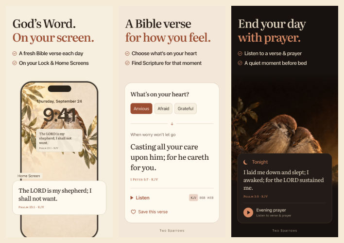

TS01 · 01
Писание рядом весь день
Открывать ещё одно приложение легко забыть. Виджет делает стих частью привычного взгляда на телефон. Показываем Lock и Home, а не перечисляем размеры виджетов.
Скачать PNG ↗Первые три скриншота Two Sparrows: стих на экране → стих под состояние → вечерняя молитва. Тёплая книжная типографика, знакомые воробьи и конкретная польза.
Работаем на этой странице. Новые итерации — сверху; предыдущие сохраняются. Реальная конверсия в скачивание ещё не измерена.
Открывать ещё одно приложение легко забыть. Виджет делает стих частью привычного взгляда на телефон. Показываем Lock и Home, а не перечисляем размеры виджетов.
Скачать PNG ↗«Мне тревожно — где искать стих?» Выбор состояния ведёт к Писанию с понятной ссылкой. Самый личный кадр для Strugglers.
Скачать PNG ↗Когда устал читать, можно послушать стих и молитву. Candle и знакомые воробьи продолжают мир приложения; обещания заснуть нет.
Скачать PNG ↗
Размеры заголовков и буллетов одинаковы во всех кадрах: 48 и 22 CSS px в макете шириной 440. Полные PNG: RGB, без альфы. Уменьшение проверено глазами; отсутствие переполнений — рендерером.
Jev: 19 синтетических персон из 7 когорт × два порядка = 38 вызовов на выбор задач и заголовков, затем ещё 38 на точные финальные тексты. Модель получила текст и описание композиции, не пиксели. Это не опрос людей и не прогноз процента скачиваний.
| Кадр | Аффинитивность ↑ | Понятность ↑ | Сила хука ↑ | Мотив скачать ↑ | Риск кликбейта ↓ |
|---|---|---|---|---|---|
| TS01 | |||||
| TS02 | |||||
| TS03 |
Все числа — модельный Score 0–4. «Сила хука» оценивает интерес остановиться и посмотреть; «риск кликбейта» — чрезмерное или двусмысленное обещание. Доли когорт 30/22/20/10/8/5/5 взяты из продуктового исследования; реальная смесь трафика неизвестна.
В выборе первого кадра финального ряда: TS01 — 0.671, TS02 — 0.178, TS03 — 0.031, ни один — 0.121. Это вероятность выбора модели внутри этих вариантов, не конверсия. TS01 лидирует в обоих порядках: 0.714 и 0.627.
TS02 даёт мотив скачать 2.38 / 4 против 1.60 у TS01. Это кандидат на первый кадр отдельной страницы под запрос о состоянии. Общая витрина начинает с понятной категории.
Общий мотив скачать — около 1.5 / 4, при аффинитивности до 2.98. На входе честно указана подписка. У испаноязычной и части католической аудитории дополнительно не закрыт нужный контент.
Для первого кадра «A Bible verse. Every day.» — .407, «God’s Word. On your screen.» — .345: близкие варианты. Выбрано второе — оно называет место использования, а слово Bible остаётся в буллете. «A Bible verse for how you feel.» уверенно предпочитается другим заголовкам состояния: .858. Для вечера модель предпочла «Listen. Pray. Rest.» (.582), но редакционно оставлено более предметное «End your day with prayer.» (.260). Точные выбранные тексты после этого прошли отдельную проверку, представленную в таблице.
План чтения получил самый высокий отдельный Score задач (1.77), но почти не выбирался первым (.003). Это разные вопросы, их выводы не совпадают. В актуальной навигации нет полноценного раздела Plans, поэтому в первой тройке показан реализованный вечерний сценарий. Порядок остаётся редакционной гипотезой, а не измеренным рейтингом спроса.
Перестановка вариантов — проверка чувствительности к порядку, не новые независимые люди. Описания сцен облегчают понимание по сравнению с быстрым просмотром маленькой картинки. Подтверждение конверсии потребует теста на реальном трафике.
Использованы текущий дизайн Linen Heritage, Literata и существующие иллюстрации из онбординга. Крупные карточки — редакционные композиции интерфейса, не неизменённые снимки сборки. Тексты стихов KJV: Psalm 23:1, 1 Peter 5:7, Psalm 3:5. Текст сверстан отдельно от иллюстраций.
Продукт сверялся с текущим main: e9b08e1. Виджеты, выбор состояния и очередь аудио «стих → молитва» есть в коде. Конкретные примеры KJV, доступность записи и поведение настоящего Lock Screen требуют проверки на релизной сборке перед App Store. Старый исходный снимок Tonight показывает «Audio soon» — текущие макеты не являются доказательством работающего аудио.
Бесплатный доступ навсегда не обещается: актуальная модель — подписка после триала. Apple Watch, католические чтения, испанский контент и планы не вынесены в эти кадры. Текущая серия не загружалась в App Store Connect.
Для теста: сравнить первые скачивания на посетителя при одинаковых источнике трафика, локали, цене, иконке и остальных материалах. Первый вариант — этот ряд; отдельная гипотеза — TS02 первым для запроса о состоянии.
Salvora, PestSnap, BumpCheck — примеры ясного обещания и видимого результата. Композиция адаптирована к Two Sparrows. Производственный плейбук · Проверка рендера и SHA-256
{kind=link}
{kind=link}
{kind=link}